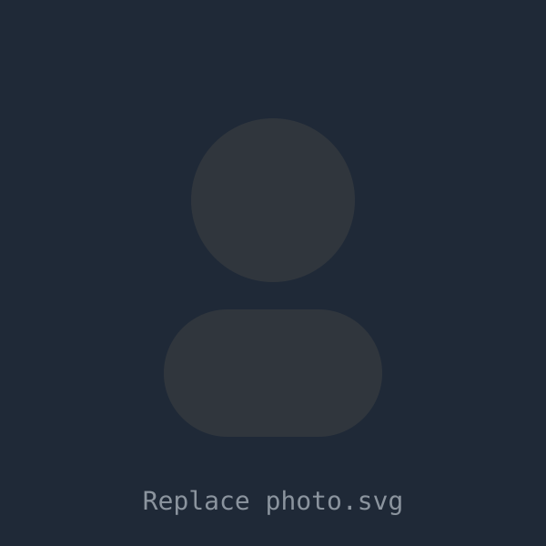

Contexte : Lors du Hackathon 2024, nous avons conçu et assemblé une borne d'arcade fonctionnelle à partir des composants fournis. L'objectif était de faire fonctionner l'ensemble — hardware et software — dans un délai de trois jours, en équipe.
// portfolio EPHEC · Technologies de l'Informatique
Étudiant en informatique, passionné par l'IA, la cybersécurité et le développement logiciel. Bilingue FR/EN, curieux et autonome, je transforme l'apprentissage en projets concrets.

// 01 · à propos
Je m'appelle Thomas Girboux, j'ai 21 ans et je suis actuellement en bachelier en informatique à l'EPHEC, avec une spécialisation progressive en développement web, bases de données et réseaux.
Diplômé de l'Institut du Sacré-Cœur de Nivelles (CESS – Sciences appliquées), j'ai grandi entre la Belgique et les États-Unis, ce qui m'a permis de développer un bilinguisme naturel français/anglais. Je dispose également de notions de néerlandais.
En dehors des cours, je me consacre à des projets personnels en intelligence artificielle, à des challenges de cybersécurité (CTF) et à des hackathons. Je suis convaincu que l'on apprend le mieux en construisant, en testant et en itérant.
// compétences techniques
// langues
// 02 · projet professionnel
Mon ambition est de devenir développeur logiciel spécialisé en intelligence artificielle et en cybersécurité. Ces deux domaines me passionnent, et je veux concevoir des solutions à la fois performantes, utiles et robustes — trois exigences devenues essentielles dans l'IT actuel.
À court terme, je souhaite consolider mes bases en développement (web, API, algorithmes) tout en approfondissant mes compétences en machine learning et en sécurité des systèmes. À moyen terme, je vise une carrière dans une entreprise technologique innovante, idéalement en fintech, en cybersécurité ou en IA appliquée.
Ma vision à cinq ans : contribuer à des produits concrets qui améliorent le quotidien des utilisateurs, tout en garantissant un haut niveau de sécurité et de fiabilité technique.
// 03 · bilan personnel
// 04 · activités d'acquisition de compétences
Au cours de cette année académique, j'ai cherché à diversifier au maximum mes modes d'apprentissage — projets personnels, hackathons, conférences, expériences professionnelles et challenges compétitifs. Cette démarche m'a permis de tester mes compétences dans des contextes concrets et variés, souvent sous pression ou avec des contraintes réelles. Les 7 thèmes ci-dessous regroupent mes activités par domaine de compétence.
Les expériences les plus marquantes ont été celles menées sous contrainte de temps : elles m'ont appris à prioriser, à communiquer clairement en équipe et à garder une approche structurée face à l'incertitude.
Contexte : Lors du Hackathon 2024, nous avons conçu et assemblé une borne d'arcade fonctionnelle à partir des composants fournis. L'objectif était de faire fonctionner l'ensemble — hardware et software — dans un délai de trois jours, en équipe.
Contexte et déroulement. Le Hackathon 2024 représentait ma première expérience d'un événement de ce type à l'EPHEC. L'idée de construire une borne d'arcade fonctionnelle à partir de composants fournis m'a immédiatement motivé : c'était un projet à la fois concret, visible et suffisamment ambitieux pour sortir de ma zone de confort. Dès le début, notre équipe a dû s'organiser rapidement, répartir les rôles et établir un plan de travail, car trois jours semblent longs mais passent extrêmement vite quand on travaille sur de l'intégration hardware/software.
Ce que j'ai appris techniquement. Sur le plan technique, j'ai pu découvrir comment relier des composants physiques — écran, contrôleurs, alimentation — à une logique logicielle. Cela m'a confronté à des problèmes que l'on ne rencontre pas dans le développement pur : les dépendances matérielles, la gestion des drivers, la fiabilité électrique. J'ai réalisé que le hardware impose une forme de rigueur différente du code : une erreur n'est pas simplement un bug à corriger, elle peut endommager un composant ou bloquer l'équipe entière.
Soft skills mobilisés. Ce qui m'a le plus surpris, c'est la dimension humaine du hackathon. Travailler aussi intensément avec des coéquipiers, souvent sous fatigue et pression, exige une communication claire et une capacité à gérer les désaccords sans blocage. J'ai appris à mieux articuler mes idées techniques face à des personnes qui ne partagent pas forcément la même vision, et à accepter des compromis quand une solution plus élégante devait être abandonnée faute de temps.
Lien avec mon projet professionnel. Cette expérience m'a conforté dans l'idée que les ingénieurs logiciels les plus efficaces sont ceux qui comprennent aussi les contraintes du monde physique et des systèmes intégrés. À terme, si je travaille dans la cybersécurité ou l'IA embarquée, cette sensibilité au hardware sera un vrai atout. Le hackathon m'a aussi montré que je peux produire sous pression : une qualité indispensable en environnement professionnel réel.
Contexte : Pour le Hackathon 2025, notre équipe a conçu et réalisé une marionnette automatique — un système mécatronique combinant mécanique, électronique et programmation pour animer une marionnette de manière autonome.
Progression par rapport à 2024. Avoir déjà participé au hackathon l'année précédente m'a donné un avantage non négligeable : je savais à quoi m'attendre en termes de rythme, de pression et d'organisation. Dès le lancement, j'ai pu adopter une posture plus proactive dans la structuration du projet — définir des sous-objectifs clairs, identifier les risques techniques en amont et répartir les tâches de manière plus efficace qu'en 2024.
Défis techniques de la marionnette automatique. Ce projet était d'une nature radicalement différente de la borne d'arcade : il s'agissait non seulement d'assembler du hardware, mais de concevoir un système de contrôle capable de produire des mouvements fluides et coordonnés. Nous avons travaillé avec des servomoteurs, des microcontrôleurs et un système de commande programmé. La grande difficulté résidait dans la synchronisation : obtenir des mouvements naturels et non mécaniques demande de fine-tuner chaque séquence d'actionnement, ce qui s'est avéré bien plus laborieux que prévu.
Ce que j'ai appris de nouveau. J'ai découvert concrètement les défis de la mécatronique : un système ne fonctionne bien que si chacune de ses couches — mécanique, électronique et logicielle — est correctement calibrée. Un bug dans le code peut avoir des conséquences physiques immédiates, et inversement, une pièce mal ajustée peut rendre le programme inopérant. Cette interdépendance m'a appris à penser de façon plus systémique, à diagnostiquer des problèmes qui traversent plusieurs niveaux d'abstraction.
Liens avec mes forces et mon projet professionnel. Ce hackathon a renforcé ma capacité à travailler sur des systèmes complexes où l'incertitude est forte et les délais serrés. Il a aussi mis en lumière ma tendance à vouloir résoudre les problèmes de façon élégante, quitte à y passer plus de temps que nécessaire — une faiblesse à calibrer en contexte de hackathon. À l'avenir, dans un rôle de développeur IA ou en cybersécurité, cette aptitude à raisonner sur des systèmes multicouches sera précieuse.
Activité 3a
AI Sine Wave Approximator — Comment fonctionnent les réseaux de neurones
Contexte : Dans ce projet, j'ai construit un réseau de neurones from scratch — sans bibliothèque d'abstraction comme TensorFlow ou PyTorch — capable d'approximer une fonction sinusoïdale. La base de code est volontairement non structurée, ce qui m'a poussé à comprendre chaque mécanisme de bas niveau avant d'envisager de meilleures pratiques.
Apprentissages : Forward pass, backpropagation, fonctions d'activation, gradient descent, importance de la qualité du code.
Pourquoi ce projet, et pourquoi from scratch. J'ai délibérément choisi de ne pas utiliser PyTorch ou TensorFlow pour ce projet. Mon objectif n'était pas de produire un outil efficace, mais de comprendre ce qui se passe réellement à l'intérieur d'un réseau de neurones. Il est trop facile, avec les frameworks modernes, d'appeler model.fit() sans jamais comprendre ce que cela implique mathématiquement. En implémentant moi-même la forward pass, la backpropagation et la descente de gradient, j'ai dû confronter chaque concept de façon concrète.
Ce que le code "messy" m'a enseigné. La base de code est admettedly désordonnée — variables nommées à la va-vite, peu de modularité, logique entremêlée. Paradoxalement, c'est précisément ce désordre qui m'a appris quelque chose d'important : quand le code grossit et que l'on ne peut plus le relire facilement, les bugs deviennent exponentiellement plus difficiles à localiser. J'ai passé autant de temps à déboguer des erreurs dues à la mauvaise organisation du code qu'à résoudre des problèmes mathématiques réels. C'est une leçon que je n'aurais pas apprise aussi viscéralement en lisant un livre.
Lien avec ma faiblesse identifiée. Ce projet illustre directement mon axe d'amélioration en matière d'organisation du code. J'ai désormais une compréhension concrète de pourquoi les bonnes pratiques (séparation des responsabilités, nommage clair, commentaires) ne sont pas de la cosmétique mais des outils de productivité. La prochaine fois que je construirai un réseau de neurones from scratch, je commencerai par définir une architecture propre avant d'écrire la première ligne de logique.
Apport à mon projet professionnel. Comprendre le fonctionnement interne des réseaux de neurones est fondamental pour quiconque souhaite travailler sérieusement en IA. Ce niveau de compréhension me permet aujourd'hui d'interpréter les comportements de modèles plus complexes, d'identifier des pathologies d'entraînement (overfitting, vanishing gradient) et de lire des articles de recherche avec un œil plus critique. C'est une base que je consoliderai tout au long de ma carrière.
Activité 3b
AI Trader — Modèle de signaux financiers par ML
Contexte : Développement d'un modèle IA qui prend en entrée des paramètres financiers quantitatifs — indicateurs techniques, prix historiques, volumes — et génère des signaux d'achat/vente. Ce projet m'a initié aux bases de l'analyse quantitative appliquée.
Apprentissages : Indicateurs techniques (RSI, MACD, moyennes mobiles), normalisation de données temporelles, pipeline de données, évaluation d'un modèle ML sur des séries temporelles.
Intersection entre IA et finance. Ce projet est né d'un intérêt personnel pour les marchés financiers et d'une question concrète : est-il possible d'automatiser des décisions de trading à partir de données purement quantitatives ? La réponse est nuancée, et c'est précisément ce que ce projet m'a appris. Les marchés sont des systèmes adaptatifs — ils réagissent aux stratégies qui tentent de les prédire — ce qui rend la généralisation d'un modèle ML particulièrement difficile.
Défis techniques rencontrés. Le premier obstacle a été la préparation des données. Les séries temporelles financières ne se traitent pas comme un dataset classique : il faut éviter le look-ahead bias (utiliser des données futures dans l'entraînement), normaliser correctement pour tenir compte de la non-stationnarité des prix, et construire des features pertinentes à partir d'indicateurs techniques. J'ai appris à calculer et interpréter le RSI, le MACD et plusieurs variantes de moyennes mobiles — des outils standard en analyse quantitative que je ne connaissais qu'en théorie.
Ce que j'ai appris sur l'évaluation de modèles financiers. Évaluer un modèle de trading est plus complexe qu'évaluer un classifieur classique. La précision (accuracy) ne suffit pas : ce qui compte, c'est la qualité des signaux au bon moment, la gestion du risque et la robustesse sur des périodes de marché variées. J'ai été confronté à du overfitting chronique — le modèle performait très bien sur les données d'entraînement mais échouait sur les données de test, ce qui m'a poussé à comprendre plus profondément les mécanismes de régularisation.
Lien avec mon projet professionnel. Ce projet m'a ouvert les yeux sur la fintech et l'analyse quantitative comme domaine professionnel. L'intersection entre l'IA et la finance me fascine, et je me vois potentiellement dans un rôle de développeur quantitatif ou d'ingénieur ML dans une institution financière — une trajectoire que mon passage chez SWIFT (activité 7b) a rendu encore plus tangible.
Activité 3c
NNVisualiser — Visualiser le fonctionnement d'un réseau de neurones
Contexte : Développement d'un visualiseur interactif qui explique la logique d'un réseau de neurones directement dans le navigateur. Le projet est consultable en ligne et disponible sur GitHub.
Activité 3d
AI Training Pipeline — Appliquer des papiers de recherche
Contexte : Construction d'un pipeline d'entraînement complet pour un modèle de langage, en m'appuyant directement sur des articles de recherche académiques — notamment des travaux sur les architectures transformer et les techniques de préentraînement.
Apprentissages : Lecture et implémentation de publications scientifiques, structuration d'un projet ML complet (data loading, training loop, validation, checkpointing).
Apprendre à lire la recherche académique. Ce projet représente un passage important dans ma façon d'apprendre. Jusqu'alors, je m'appuyais principalement sur des tutoriels et de la documentation. Ici, je me suis imposé de partir directement des sources primaires : des articles publiés sur arXiv portant sur l'architecture des modèles de langage et les techniques d'entraînement. Ce changement de méthode a été difficile au début — le jargon académique et la densité mathématique des papers nécessitent une lecture active et patiente — mais extrêmement formatif.
Ce que j'ai implémenté et les difficultés rencontrées. Le pipeline comprend le chargement et la tokenisation des données textuelles, une boucle d'entraînement avec gradient accumulation, un système de validation et la sauvegarde de checkpoints. La principale difficulté était de réconcilier les descriptions parfois abstraites des papers avec du code fonctionnel. Certaines formules semblent simples sur papier mais cachent des subtilités importantes d'implémentation — notamment la gestion des dimensions de tenseurs et la stabilité numérique de certaines opérations.
Ce que la démarche scientifique m'a appris. Lire un paper de recherche m'a appris à distinguer ce qui est central (la contribution principale, les résultats clés) de ce qui est secondaire (les ablations, les détails d'implémentation spécifiques à un contexte). J'ai aussi appris à identifier les limites explicitement reconnues par les auteurs eux-mêmes — une forme d'honnêteté intellectuelle que j'essaie d'importer dans mes propres projets.
Apport à mon projet professionnel. Savoir lire et implémenter de la recherche est une compétence rare et très valorisée dans les équipes IA avancées. Cela m'ouvre la porte à des rôles de recherche appliquée ou d'ingénierie ML de haut niveau, où la capacité à transformer des innovations récentes en systèmes opérationnels est clé.
Activité 4a
Idea Generator — Chaînes de Markov
Contexte : Développement d'une application qui génère des idées de projets à l'aide de chaînes de Markov — un modèle probabiliste de génération de texte basé sur les transitions entre états. Le projet connexe Markov-Password-Predictor applique la même logique à la prédiction de mots de passe.
Apprentissages : Théorie et implémentation des chaînes de Markov, génération de texte statistique, comparaison avec les LLMs modernes.
Qu'est-ce qu'une chaîne de Markov et comment l'ai-je implémentée. Une chaîne de Markov est un modèle probabiliste dans lequel l'état suivant dépend uniquement de l'état actuel — et non de l'historique complet. Appliquée à la génération de texte, cela signifie que le prochain mot (ou caractère) est choisi en fonction de la probabilité qu'il suive le mot actuel, calculée à partir d'un corpus d'entraînement. J'ai implémenté cela en construisant un dictionnaire de transitions : pour chaque token observé dans le corpus, je stocke la liste de tous les tokens qui le suivent, puis je tire aléatoirement selon les fréquences observées.
Ce que j'ai appris sur la génération probabiliste. Le résultat est surprenant : avec un bon corpus, le texte généré est localement cohérent (les transitions mot-à-mot ont du sens) mais globalement incohérent (le sens global se perd rapidement). C'est une illustration parfaite de la limite fondamentale du modèle : l'absence de mémoire au-delà d'un token. En augmentant l'ordre de la chaîne (bigrams, trigrams), on améliore la cohérence locale mais on réduit la créativité — le modèle tend à reproduire des segments entiers du corpus.
Comparaison avec les LLMs modernes. Ce projet m'a aidé à contextualiser ce que font réellement les grands modèles de langage. Là où une chaîne de Markov n'a aucune représentation sémantique du texte, un LLM comme GPT ou Claude encode le sens dans des espaces vectoriels de haute dimension et maintient une forme de mémoire contextuelle sur des centaines de tokens. La différence n'est pas seulement de degré — c'est une différence de nature. Implémenter une chaîne de Markov m'a permis de comprendre, par contraste, pourquoi les architectures transformer ont constitué un saut aussi radical.
Application à la sécurité. Le projet Markov-Password-Predictor m'a montré une application directe en cybersécurité : un attaquant peut entraîner un modèle de Markov sur des listes de mots de passe compromis (rockyou.txt par exemple) pour générer des candidats bien plus réalistes qu'une approche par force brute naïve. Cela illustre pourquoi les politiques de mots de passe ne doivent pas se contenter d'imposer une longueur minimale.
Activité 4b
Text Adventure Game — Architecture orientée données
Contexte : Développement d'un jeu d'aventure textuel entièrement piloté par des données JSON, avec un parseur de variables et un système de combat. L'objectif était de séparer strictement la logique du contenu pour faciliter l'expansion.
Apprentissages : Architecture data-driven, parsing de commandes textuelles, conception de systèmes modulaires et extensibles.
Pourquoi une architecture data-driven. Dès le début du projet, j'ai pris une décision de conception fondamentale : toutes les données du jeu — salles, objets, ennemis, dialogues, règles de combat — seraient définies dans des fichiers JSON externes, jamais codées en dur dans la logique Python. L'objectif était de pouvoir modifier, étendre ou remplacer le contenu sans toucher au code du moteur. C'est une approche courante dans le développement de jeux vidéo professionnels, et je voulais en comprendre les avantages et les contraintes.
Comment fonctionne le parseur. Le parseur de commandes lit l'entrée de l'utilisateur (par exemple "go north", "attack goblin with sword", "take key") et la décompose en verbe, objet direct et modificateurs. Il résout ensuite les variables contextuelles — la salle courante, l'inventaire du joueur, les ennemis présents — pour exécuter l'action correspondante. La difficulté principale était de gérer les ambiguïtés : que faire si le joueur tape "take" sans préciser d'objet ? Ou s'il fait référence à un objet par un alias non prévu dans le JSON ? J'ai dû concevoir un système de fallback et de messages d'erreur contextuels.
Défis de conception et leçons apprises. Le plus grand défi a été de définir un schéma JSON assez flexible pour décrire des situations variées, sans devenir si générique qu'il perde en lisibilité. J'ai réalisé que la conception d'un bon format de données est un exercice de design à part entière — similaire à la conception d'une API. Chaque fois que j'ajoutais une nouvelle fonctionnalité (le combat, les objets utilisables, les conditions d'accès à certaines salles), je devais décider si elle méritait un nouveau champ JSON ou si elle pouvait être gérée par la logique existante.
Apport à mon projet professionnel. Ce projet m'a initié aux principes de séparation des responsabilités et de conception orientée données qui sont au cœur du développement logiciel professionnel. Que ce soit dans le développement web (séparation front/back), l'IA (séparation configuration/logique d'entraînement) ou la cybersécurité (séparation règles/moteur de détection), ces principes s'appliquent partout. C'est un projet dont je suis particulièrement fier pour sa qualité architecturale, qui contraste avec le code désorganisé du projet Sine Wave.
| Challenge | Catégorie | Points | Date |
|---|---|---|---|
| Bill's Gates | Cryptography | 464 | Feb 28, 1:36 PM |
| Time Capsule | Cryptography | 214 | Feb 27, 5:56 PM |
| Neon Nights | Reverse Engineering | 142 | Feb 28, 2:40 AM |
| D3? Brew | Reverse Engineering | 124 | Feb 28, 2:41 AM |
| Is This a Rainbow? | Forensics | 50 | Feb 28, 2:17 AM |
| Catch of the Day | Forensics | 50 | Feb 28, 1:04 AM |
| Snapshots | Forensics | 50 | Feb 27, 10:42 PM |
| Welcome to the Qualifiers! | Intro | 50 | Feb 27, 5:51 PM |
Contexte et préparation. Le Cyber Security Challenge Belgium est la principale compétition CTF du pays, ouverte aux étudiants belges. J'ai décidé d'y participer sans préparation structurée préalable, ce qui était à la fois une décision audacieuse et honnête : je voulais mesurer mon niveau réel, pas celui que j'aurais après un entraînement ciblé. En une journée intense, j'ai résolu 8 challenges couvrant 4 catégories différentes — cryptographie, reverse engineering, forensics et introduction.
Cryptographie — les challenges les plus formateurs. Les deux challenges de cryptographie (Bill's Gates et Time Capsule) ont été ceux qui m'ont le plus appris. Bill's Gates notamment m'a exposé à des vulnérabilités classiques dans des systèmes cryptographiques mal implémentés. L'essence d'un challenge de crypto CTF, c'est de trouver le point faible dans une implémentation apparemment correcte — une clé trop courte, une IV réutilisée, un padding oracle. Cela m'a fait comprendre que la sécurité cryptographique n'est pas binaire : un algorithme solide peut être rendu totalement inefficace par une mauvaise utilisation.
Reverse Engineering — entrer dans la boîte noire. Les deux challenges de reverse engineering (Neon Nights, D3? Brew) ont été parmi les plus stimulants intellectuellement. L'objectif est d'analyser un binaire compilé — dont on n'a pas le code source — pour comprendre ce qu'il fait et extraire un flag caché. J'ai utilisé des outils de désassemblage et de décompilation pour reconstruire la logique du programme. C'est une compétence directement applicable en cybersécurité défensive : comprendre comment les malwares fonctionnent nécessite exactement les mêmes techniques.
Forensics — analyser des traces numériques. Les trois challenges de forensics (Is This a Rainbow?, Catch of the Day, Snapshots) m'ont confronté à l'analyse d'artefacts numériques : images, captures réseau, snapshots mémoire. Ces challenges m'ont initié aux techniques d'investigation numérique — extraction de métadonnées cachées, analyse de trafic réseau, récupération de données dans des images disque.
Ce que le CTF m'a révélé sur la cybersécurité. La cybersécurité est un domaine qui exige une curiosité insatiable, une pensée latérale et une capacité à relier des domaines très différents. Un bon challenger doit à la fois comprendre la cryptographie mathématique, l'architecture des systèmes, la programmation bas niveau et les protocoles réseau. Le CTF m'a montré que j'ai des bases solides en crypto et en RE, et des lacunes à combler en forensics avancée et en exploitation web. Cette cartographie précise de mes forces et faiblesses est en elle-même une valeur de l'expérience.
Lien avec mon projet professionnel. Participer au CSC Belgium a cristallisé mon intérêt pour la cybersécurité comme domaine professionnel. Un classement de 343e sur l'ensemble des participants belges, sans préparation spécifique, me donne une base de départ réelle sur laquelle m'appuyer pour progresser. Je compte participer à l'édition suivante après une préparation plus structurée.
Contexte : Conférence organisée par l'EPHEC, animée par Kevin Keurvels de la société Axentys. La session portait sur les services cloud Microsoft — Azure et Microsoft 365 — dans un contexte professionnel de déploiement et de support pour entreprises.
Apprentissages : Vue d'ensemble de l'écosystème Azure, intégration de M365 en entreprise, concepts clés du cloud (IaaS, PaaS, SaaS) dans un contexte concret.
Contexte et déroulement de la conférence. Cette conférence, animée par Kevin Keurvels d'Axentys — une société de services informatiques pour professionnels — m'a offert ma première exposition structurée à l'écosystème cloud Microsoft en contexte professionnel réel. L'angle adopté par l'intervenant était délibérément pratique : moins de théorie abstraite, davantage de cas concrets de déploiement et de support chez des clients PME/ETI.
Ce que j'ai appris sur l'écosystème Azure. Azure est articulé autour de trois grandes catégories de services : l'IaaS (Infrastructure as a Service), qui fournit des machines virtuelles et du stockage à la demande ; le PaaS (Platform as a Service), qui abstrait l'infrastructure pour permettre aux développeurs de se concentrer sur le code ; et le SaaS (Software as a Service), dont Microsoft 365 est l'exemple le plus répandu. Cette taxonomie, que je connaissais de façon abstraite, a pris un sens beaucoup plus concret en entendant comment un prestataire comme Axentys choisit entre ces options selon les contraintes du client (budget, compétences internes, besoins de scalabilité).
Azure vs AWS vs GCP. L'intervenant a brièvement comparé les trois grands hyperscalers. Azure se distingue par son intégration native avec l'écosystème Microsoft (Active Directory, Teams, Office) — un avantage considérable dans des environnements d'entreprise déjà standardisés sur Windows et M365. AWS reste leader en part de marché et en richesse de services, tandis que GCP est particulièrement fort sur les services analytiques et l'IA (BigQuery, Vertex AI). Ce positionnement différencié m'a aidé à comprendre que le choix d'un cloud n'est pas technique mais stratégique : il dépend de l'existant, des compétences disponibles et des cas d'usage prioritaires.
Lien avec ma faiblesse identifiée et pistes de formation. Cette conférence a confirmé que mon manque d'expérience pratique en cloud est un axe de progression réel. Deux heures de conférence introductive ne suffisent pas à acquérir des compétences opérationnelles, mais elles m'ont permis de cartographier l'écosystème et d'identifier des pistes concrètes : la certification AZ-900 (Azure Fundamentals) me semble un premier objectif réaliste, suivi d'une pratique sur l'offre gratuite Azure pour déployer des projets personnels.
Activité 7a
Gestion de clients bilingue — Dernier QG de Napoléon
Contexte : Poste d'accueil étudiant dans un musée historique à fréquentation touristique internationale. Responsabilités : accueil bilingue FR/EN, gestion des paiements, surveillance des espaces et assistance aux visiteurs.
Apprentissages : Communication professionnelle en contexte multiculturel, gestion de situations délicates, fiabilité et ponctualité en milieu de travail réel.
Un environnement humain exigeant. Le Dernier QG de Napoléon est un musée historique qui accueille des visiteurs venant du monde entier — groupes touristiques anglophones, familles belges, scolaires francophones, passionnés d'histoire de toutes nationalités. Tenir le poste d'accueil dans ce contexte signifiait passer d'une langue à l'autre plusieurs fois par heure, adapter son registre de communication (familier avec les familles, formel avec les groupes organisés, pédagogique avec les enfants) et gérer des situations imprévues sans filet.
Situations concrètes gérées. Parmi les situations qui m'ont le plus fait grandir : gérer des visiteurs mécontents (attente trop longue, problème de billet), expliquer des procédures de sécurité à des personnes ne parlant pas nos langues de travail, ou assurer la surveillance seul lors de visites tardives. Dans chacun de ces cas, la solution n'était pas technique — elle demandait du calme, de l'empathie et une communication claire sous pression. Ce sont exactement les soft skills que l'on ne peut pas apprendre dans un livre de cours.
Développement du bilinguisme professionnel. Mon bilinguisme français/anglais est une donnée biographique — j'ai grandi entre la Belgique et les États-Unis — mais ce poste m'a appris à le mobiliser dans un contexte professionnel. Être bilingue dans la vie quotidienne est différent d'être bilingue face à un client ou un groupe de touristes : il faut maîtriser le vocabulaire spécialisé (histoire militaire, architecture du XIXe siècle), adapter son accent et son débit, et rester professionnel même quand la conversation prend une tournure imprévue.
Lien avec mes compétences professionnelles futures. Dans le secteur IT, la communication est souvent sous-estimée par les étudiants qui se concentrent sur les compétences techniques. Pourtant, un développeur ou un ingénieur en sécurité qui sait communiquer clairement avec des interlocuteurs non-techniques — clients, managers, équipes commerciales — a un avantage concurrentiel réel. Ce poste m'a appris à synthétiser l'essentiel, à anticiper les questions et à ajuster mon discours selon mon interlocuteur : des compétences que j'utilise déjà dans mes présentations académiques.
Activité 7b
Job d'été chez SWIFT — Automatisation Excel & Macros
Contexte : Job d'été au sein de SWIFT — la coopérative mondiale qui gère l'infrastructure de messagerie financière interbancaire utilisée par plus de 11 000 institutions dans 200 pays. J'ai appliqué des macros Excel avancées pour automatiser des tâches de traitement de données au sein d'une équipe opérationnelle.
Apprentissages : VBA et automatisation Excel en contexte professionnel réel, rigueur requise dans le secteur financier, compréhension de l'infrastructure financière mondiale.
SWIFT : un environnement professionnel d'exception. Travailler chez SWIFT, même en tant que job d'été, est une expérience rare. SWIFT n'est pas une banque — c'est l'infrastructure sur laquelle repose la communication entre les banques du monde entier. Chaque message SWIFT représente une transaction financière réelle : une erreur dans le traitement des données peut avoir des conséquences qui se propagent à travers des chaînes de règlement internationales. Ce contexte m'a immédiatement imposé un niveau de rigueur et d'attention aux détails que je n'avais pas encore expérimenté dans mes projets personnels.
Ce que j'ai automatisé et comment. Mon rôle consistait à automatiser des processus de traitement de données répétitifs qui étaient effectués manuellement par les équipes opérationnelles. En pratique, cela signifiait analyser les étapes manuelles existantes, identifier les patterns répétables, puis écrire des macros VBA capables de reproduire ces étapes de façon fiable. J'ai notamment travaillé sur des consolidations de rapports multi-feuilles, des transformations de formats de données et des générateurs de tableaux récapitulatifs. Chaque macro était validée manuellement avant déploiement pour s'assurer qu'elle produisait exactement les mêmes résultats que le processus manuel.
Ce que ce contexte m'a appris sur l'automatisation. Dans mes projets personnels, l'automatisation est un outil de productivité personnelle. Chez SWIFT, c'était un outil de fiabilité organisationnelle : l'objectif n'était pas de travailler plus vite, mais de produire des résultats parfaitement reproductibles, auditables et résistants aux erreurs humaines. J'ai compris que dans un contexte professionnel critique, la valeur d'un script ne réside pas dans son élégance mais dans sa robustesse et sa lisibilité — deux qualités que je travaille encore à développer dans mes projets personnels.
Vision de l'informatique en milieu bancaire. Ce passage chez SWIFT m'a donné un aperçu concret de la façon dont les grandes institutions financières utilisent l'informatique. Contrairement à ce qu'on pourrait imaginer, une partie significative du travail opérationnel repose encore sur des outils bureautiques — Excel en tête — plutôt que sur des systèmes entièrement automatisés. Cela m'a montré l'immense potentiel d'amélioration que représente une meilleure ingénierie logicielle dans ce secteur, et conforté mon intérêt pour la fintech et l'IA appliquée à la finance.
Lien avec mon projet professionnel. Ce job d'été a rendu tangible une trajectoire professionnelle que je n'avais envisagée qu'en théorie : travailler à l'intersection de la technologie et de la finance. Après avoir vu de l'intérieur comment fonctionne une institution comme SWIFT, je me sens encore plus motivé à construire des compétences solides en IA et en sécurité pour, à terme, contribuer à moderniser des systèmes financiers critiques.
// 05 · projets GitHub
IA · Python
AI Sine Wave Approximator
Réseau de neurones from scratch pour approximer une sinusoïde.
Algorithme · Markov
Idea Generator
Génération d'idées par chaînes de Markov.
Game · Data-driven · JSON
Text Adventure Game
Jeu d'aventure textuel avec parseur et combat, entièrement piloté par JSON.
Sécurité · Markov
Markov Password Predictor
Prédicteur de mots de passe par modèle probabiliste.
IA · LLM · Pipeline
LLM Training Pipeline
Pipeline d'entraînement basé sur des publications académiques.
IA · Visualisation · Web
NNVisualiser
Visualisation interactive de réseaux de neurones avec démonstration web en ligne.
// 06 · contact